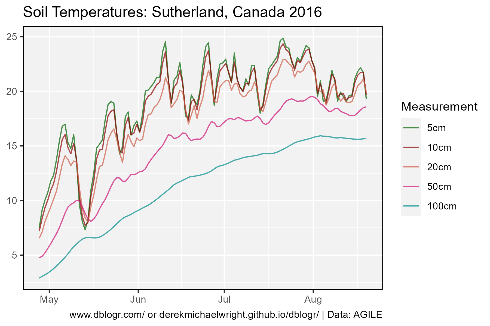
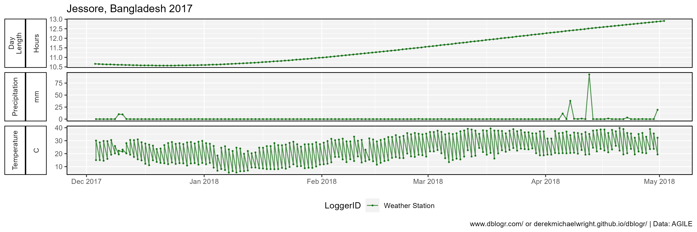
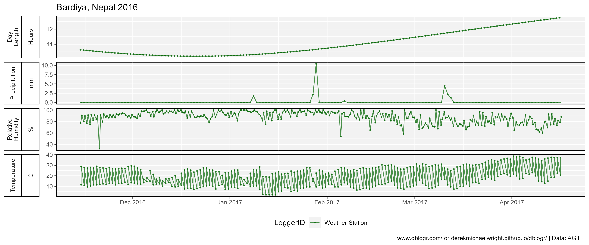
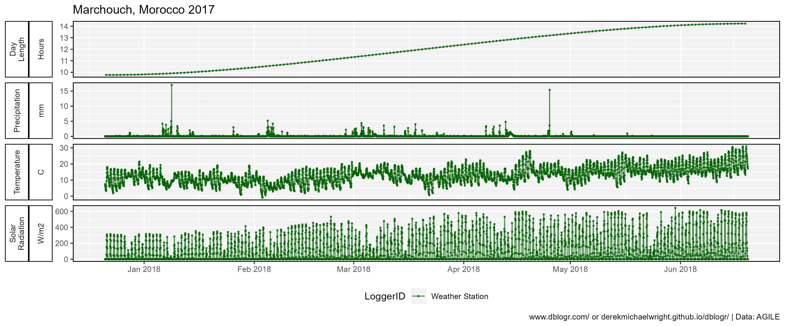
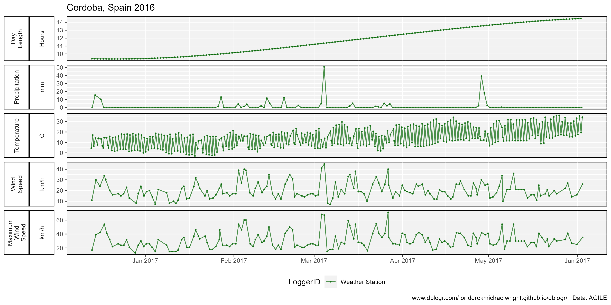
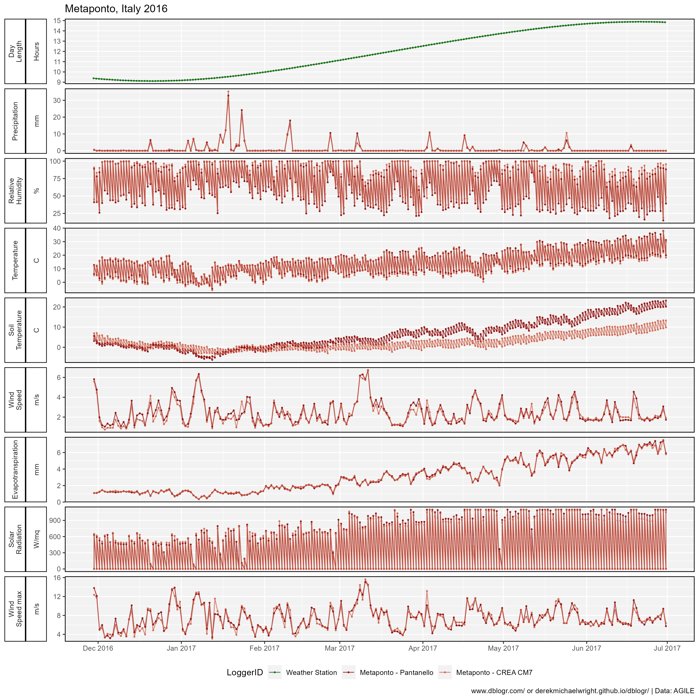

Environmental Data Vignette
An R tutorial on how to manipulate and plot environmental data
Introduction
The purpose of this document is to provide a few examples of how to manipulate and plot the environmental data. The data for this vignette comes from lentil field trials in the AGILE project.
Data
Data sets can be downloaded from knowpulse.usask.ca/ or my github.
# devtools::install_github("derekmichaelwright/agData")
library(agData)Prepare the data
# Read in data
KP_file <- "environment_data.tar" # Location of File
files <- untar(KP_file, list = T) # Store filenames
untar(KP_file) # Extract filesdd <- list() # Create Empty list
files <- list.files()[grepl(".csv", list.files())]
for (i in 1:length(files)) {
dd[[i]] <- read.csv(files[i], stringsAsFactors = T)
colnames(dd[[i]])[1] <- "Location"
}
# Bind files together
dd <- do.call(rbind, dd)
# Filter data
dd <- dd %>% filter(!is.na(DaysAfterPlanting))
# Prep data for plotting
locs <- c("Rosthern, Canada", "Sutherland, Canada", "Central Ferry, USA",
"Bhopal, India","Jessore, Bangladesh","Bardiya, Nepal",
"Marchouch, Morocco", "Cordoba, Spain", "Metaponto, Italy")
dd <- dd %>%
mutate(Value = as.numeric(Value)) %>%
filter(!is.na(Value)) %>%
mutate(Expt = paste(Location, Year),
Time = ifelse(is.na(Time) | Time == "",
"12:00:00", as.character(Time)),
Date = as.Date(Date),
DateTime = as.POSIXct(paste(Date, Time),
format = "%Y-%m-%d %H:%M:%OS"),
Location = factor(Location, levels = locs),
LoggerID = factor(LoggerID, levels = unique(.$LoggerID)) )
# Create a color palette
myCols <- c("darkgreen", "darkred", "coral3", "deeppink3", "darkcyan",
"burlywood4", "darkslateblue", "darkmagenta", "darkgoldenrod3")
myCaption <- "\u00A9 derekmichaelwright.github.io/dblogr/ | Data: AGILE"
# View table
dd %>% as_tibble()## # A tibble: 355,207 × 11
## Location Year Date Time LoggerID Measurement Unit Value DaysAfterPlanting Expt DateTime
## <fct> <int> <date> <chr> <fct> <fct> <fct> <dbl> <int> <chr> <dttm>
## 1 Bardiya, Nepal 2016 2016-11-14 06:44:24 Weather Station Day Length Hours 10.6 0 Bardiya, Ne… 2016-11-14 06:44:24
## 2 Bardiya, Nepal 2016 2016-11-15 06:45:36 Weather Station Day Length Hours 10.6 1 Bardiya, Ne… 2016-11-15 06:45:36
## 3 Bardiya, Nepal 2016 2016-11-16 06:46:12 Weather Station Day Length Hours 10.6 2 Bardiya, Ne… 2016-11-16 06:46:12
## 4 Bardiya, Nepal 2016 2016-11-17 06:46:48 Weather Station Day Length Hours 10.6 3 Bardiya, Ne… 2016-11-17 06:46:48
## 5 Bardiya, Nepal 2016 2016-11-18 06:48:00 Weather Station Day Length Hours 10.6 4 Bardiya, Ne… 2016-11-18 06:48:00
## 6 Bardiya, Nepal 2016 2016-11-19 06:48:36 Weather Station Day Length Hours 10.5 5 Bardiya, Ne… 2016-11-19 06:48:36
## 7 Bardiya, Nepal 2016 2016-11-20 06:49:12 Weather Station Day Length Hours 10.5 6 Bardiya, Ne… 2016-11-20 06:49:12
## 8 Bardiya, Nepal 2016 2016-11-21 06:50:24 Weather Station Day Length Hours 10.5 7 Bardiya, Ne… 2016-11-21 06:50:24
## 9 Bardiya, Nepal 2016 2016-11-22 06:51:00 Weather Station Day Length Hours 10.5 8 Bardiya, Ne… 2016-11-22 06:51:00
## 10 Bardiya, Nepal 2016 2016-11-23 06:51:36 Weather Station Day Length Hours 10.5 9 Bardiya, Ne… 2016-11-23 06:51:36
## # ℹ 355,197 more rows# List experiments
dd %>% distinct(Location, Year)## Location Year
## 1 Bardiya, Nepal 2016
## 2 Bardiya, Nepal 2017
## 3 Bhopal, India 2016
## 4 Bhopal, India 2017
## 5 Central Ferry, USA 2017
## 6 Central Ferry, USA 2018
## 7 Cordoba, Spain 2016
## 8 Cordoba, Spain 2017
## 9 Jessore, Bangladesh 2016
## 10 Jessore, Bangladesh 2017
## 11 Marchouch, Morocco 2016
## 12 Marchouch, Morocco 2017
## 13 Metaponto, Italy 2016
## 14 Metaponto, Italy 2017
## 15 Rosthern, Canada 2016
## 16 Rosthern, Canada 2017
## 17 Sutherland, Canada 2016
## 18 Sutherland, Canada 2017
## 19 Sutherland, Canada 2018#List Measurements from a single experiment
dd %>% filter(Location == "Sutherland, Canada", Year == 2016) %>%
distinct(Measurement)## Measurement
## 1 Day Length
## 2 Temperature
## 3 Relative Humidity
## 4 Precipitation
## 5 Dew Point
## 6 Rain Accumulation
## 7 Solar Radiation
## 8 Barometric Pressure
## 9 Soil Moisture
## 10 Soil Temperature 5cm
## 11 Soil Temperature 10cm
## 12 Soil Temperature 20cm
## 13 Soil Temperature 50cm
## 14 Soil Temperature 100cm# List data logger names from a single experiment
dd %>% filter(Location == "Sutherland, Canada", Year == 2016) %>%
distinct(LoggerID)## LoggerID
## 1 Weather Station
## 2 Weather Station1
## 3 Weather Station2
## 4 Weather Station3
## 5 IButton1
## 6 IButton2
## 7 IButton3
## 8 Hobo
## 9 Kernen Weather StationSummarize data
Calucate min, mean and max for each measurement
xx <- dd %>%
group_by(Location, Year, Date, Measurement) %>%
summarise_at(vars(Value), funs(min, mean, max)) %>%
ungroup()
str(xx)## tibble [18,795 × 7] (S3: tbl_df/tbl/data.frame)
## $ Location : Factor w/ 9 levels "Rosthern, Canada",..: 1 1 1 1 1 1 1 1 1 1 ...
## $ Year : int [1:18795] 2016 2016 2016 2016 2016 2016 2016 2016 2016 2016 ...
## $ Date : Date[1:18795], format: "2016-05-06" "2016-05-06" "2016-05-07" "2016-05-07" ...
## $ Measurement: Factor w/ 64 levels "Day Length","Maximum Temperature",..: 1 6 1 6 1 6 1 6 1 6 ...
## $ min : num [1:18795] 15.1 3 15.2 0 15.2 ...
## $ mean : num [1:18795] 15.1 11.1 15.2 12.8 15.2 ...
## $ max : num [1:18795] 15.1 18 15.2 26 15.2 ...Plot all data
# Filter data
xx <- dd %>% filter(Location == "Sutherland, Canada", Year == 2016)
# Plot graph
mp <- ggplot(xx, aes(x = DateTime, y = Value, color = LoggerID)) +
geom_line(alpha = 0.7) +
geom_point(alpha = 0.7, size = 0.5) +
facet_wrap(Measurement + Unit ~ ., scales = "free_y", switch = "y",
ncol = 1, labeller = label_wrap_gen(width = 10)) +
theme_agData(strip.placement = "outside", legend.position = "bottom") +
scale_x_datetime(date_breaks = "1 month", date_minor_breaks = "1 day",
date_labels = "%b %Y") +
scale_colour_manual(values = myCols) +
labs(title = "Sutherland, Canada 2016", y = NULL, x = NULL,
caption = myCaption)
ggsave("envdata_01.png", mp, width = 12, height = 15, limitsize = F)
Temperature
Plot and calculate daily min, mean and max
# Filter data
xx <- dd %>% filter(Location == "Sutherland, Canada", Year == 2016,
Measurement == "Temperature")
# Plot graph
mp <- ggplot(xx, aes(x = DateTime, y = Value, color = LoggerID)) +
geom_line(alpha = 0.7) +
geom_point(alpha = 0.7, size = 0.5) +
theme_agData(legend.position = "bottom") +
scale_colour_manual(values = myCols) +
scale_x_datetime(date_labels = "%b %Y" , date_breaks = "1 month") +
labs(title = "Sutherland, Canada 2016", y = "Temperautre (C)", x = NULL,
caption = myCaption)
ggsave("envdata_02.png", mp, width = 7, height = 5)Plot temperatures for one month (July 2016)
mp <- mp +
scale_x_datetime(date_breaks = "1 month", date_minor_breaks = "1 day",
date_labels = "%b %Y" ,
limits = as.POSIXct(c("2016-07-01","2016-08-01"))) +
ylim(c(5,45))
ggsave("envdata_03.png", mp, width = 7, height = 5)Calculate daily mean for each data logger
yy <- xx %>%
group_by(LoggerID, Date) %>%
summarise(Value = mean(Value)) %>%
spread(LoggerID, Value) %>%
mutate(Temp_Mean = rowMeans(select(.,-Date), na.rm = T))
str(yy)## tibble [115 × 7] (S3: tbl_df/tbl/data.frame)
## $ Date : Date[1:115], format: "2016-04-27" "2016-04-28" "2016-04-29" "2016-04-30" ...
## $ Weather Station : num [1:115] NA NA NA NA NA NA NA NA NA NA ...
## $ IButton2 : num [1:115] NA NA 18.3 16.7 16.8 ...
## $ IButton3 : num [1:115] NA NA 17.5 16.7 16.9 ...
## $ Hobo : num [1:115] NA NA NA NA NA ...
## $ Kernen Weather Station: num [1:115] 6.43 8.19 8.94 9.84 11.01 ...
## $ Temp_Mean : num [1:115] 6.43 8.19 14.93 14.4 14.91 ...Calculate daily min, mean and max from specific data loggers
yy <- xx %>%
filter(LoggerID %in% c("Ibutton2","IButton3","Hobo")) %>%
group_by(Location, Date) %>%
summarise_at(vars(Value), funs(min, mean, max), na.rm = T) %>%
rename(Temp_min = min, Temp_mean = mean, Temp_max = max)
str(yy)## gropd_df [113 × 5] (S3: grouped_df/tbl_df/tbl/data.frame)
## $ Location : Factor w/ 9 levels "Rosthern, Canada",..: 2 2 2 2 2 2 2 2 2 2 ...
## $ Date : Date[1:113], format: "2016-04-29" "2016-04-30" "2016-05-01" "2016-05-02" ...
## $ Temp_min : num [1:113] 8.04 2.52 3.02 7.03 4.53 ...
## $ Temp_mean: num [1:113] 17.5 16.7 16.9 22.2 21.8 ...
## $ Temp_max : num [1:113] 27.1 35.5 35 41 46.5 ...
## - attr(*, "groups")= tibble [1 × 2] (S3: tbl_df/tbl/data.frame)
## ..$ Location: Factor w/ 9 levels "Rosthern, Canada",..: 2
## ..$ .rows : list<int> [1:1]
## .. ..$ : int [1:113] 1 2 3 4 5 6 7 8 9 10 ...
## .. ..@ ptype: int(0)
## ..- attr(*, ".drop")= logi TRUEPlot daily mean temperatures for each experiment
# Prep data
xx <- dd %>%
filter(Measurement == "Temperature", Year != 2018) %>%
group_by(Location, Year, Expt, DaysAfterPlanting) %>%
summarise(Mean = mean(Value))
# Plot graph
mp <- ggplot(xx, aes(x = DaysAfterPlanting, y = Mean, color = Location)) +
stat_smooth(geom = "line", method = "loess", se = F, alpha = 0.7, size = 2) +
facet_grid(Year ~ .) +
scale_color_manual(values = myCols) +
theme_agData() +
labs(title = "Temperature",
y = "Degrees Celsius", x = "Days After Planting",
caption = myCaption)
ggsave("envdata_04.png", mp, width = 6, height = 4)
Day Lengths
# Prep data
xx <- dd %>%
filter(Measurement == "Day Length", Year != 2018) %>%
group_by(Location, Year, Expt, DaysAfterPlanting) %>%
summarise(Mean = mean(Value) )
# Plot graph
mp <- ggplot(xx, aes(x = DaysAfterPlanting, y = Mean, color = Location)) +
geom_line(alpha = 0.7, size = 2) +
facet_grid(Year ~ .) +
scale_color_manual(values = myCols) +
theme_agData() +
labs(title = "Day Lengths",
y = "Hours", x = "Days After Planting",
caption = myCaption)
ggsave("envdata_05.png", mp, width = 6, height = 4)
Precipitation
# Prep data
xx <- dd %>%
filter(Measurement == "Precipitation") %>%
group_by(Expt, Location, Year) %>%
summarise(Rainfall = sum(Value)) %>%
arrange(Rainfall) %>%
ungroup() %>%
mutate(Expt = factor(Expt, levels = Expt),
Year = factor(Year))
# Plot graph
mp <- ggplot(xx, aes(x = Location, y = Rainfall, fill = Year)) +
geom_bar(stat = "identity", alpha = 0.7, color = "black", lwd = 0.3,
position = position_dodge2(preserve = "single")) +
scale_fill_manual(values = myCols) +
theme_agData() +
coord_flip() +
labs(title = "Total Precipitation",
caption = myCaption)
ggsave("envdata_06.png", mp, width = 6, height = 4)
# Prep data
xx <- dd %>%
filter(Measurement == "Precipitation", Year == 2016) %>%
group_by(Location, Year, Expt, Date, DaysAfterPlanting) %>%
summarise(Value = sum(Value))
# Plot graph
mp <- ggplot(xx, aes(x = DaysAfterPlanting, y = Value)) +
geom_bar(stat = "identity", fill = "steelblue") +
facet_wrap(Location~., ncol = 1) +
theme_agData() +
labs(title = "Precipitation", y = "mm", x = "Days After Planting",
caption = myCaption)
ggsave("envdata_07.png", mp, width = 6, height = 8)
Temperature, Day Length & Rainfall
Temperature and Daylength will require separate axes so we will have to rescale the data.
\[y_{scaled}=(y_{2i}-min(y_2))*\frac{max(y_1)-min(y_1)}{max(y_2)-min(y_2)}\]
\[y_{2i}=y_{scaled}*\frac{max(y_2)-min(y_2)}{max(y_1)-min(y_1)}+min(y_2)\]
e.g.,
\[12=(11.333-9.11)*\frac{(40-0)}{16.52-9.11})\]
\[11.333=12*\frac{16.52-9.11}{40-0}+9.11\]
# Prep rainfall data
locs <- c("Sutherland, Canada", "Metaponto, Italy", "Bhopal, India")
xR <- dd %>%
filter(Location %in% locs, Year == 2017,
Measurement == "Precipitation", Value > 0) %>%
group_by(Expt, Date, DaysAfterPlanting) %>%
summarise(Value = sum(Value))
# Prep temperature and daylength data
xx <- dd %>%
filter(Location %in% locs, Year == 2017,
Measurement %in% c("Temperature", "Day Length")) %>%
group_by(Expt, Measurement, Date) %>%
summarise_at(vars(Value), funs(min, mean, max)) %>%
ungroup() %>%
gather(Calc, Value, min, mean, max) %>%
mutate(Measurement = plyr::mapvalues(Measurement,
c("Temperature", "Day Length"), c("Temp", "DayLen")),
Measurement = paste(Measurement, Calc, sep="_")) %>%
select(-Calc) %>%
filter(!Measurement %in% c("DayLen_min", "DayLen_max")) %>%
spread(Measurement, Value) %>%
mutate(DayLen_Rescaled = scales::rescale(DayLen_mean, to = c(0, 45)))
# Print
str(xx)## tibble [450 × 7] (S3: tbl_df/tbl/data.frame)
## $ Expt : chr [1:450] "Bhopal, India 2017" "Bhopal, India 2017" "Bhopal, India 2017" "Bhopal, India 2017" ...
## $ Date : Date[1:450], format: "2017-11-09" "2017-11-10" "2017-11-11" "2017-11-12" ...
## $ DayLen_mean : num [1:450] 11 11 11 10.9 10.9 ...
## $ Temp_max : num [1:450] 30.5 29.6 27.3 28.1 28.9 29.5 30.5 28.4 26.7 25.3 ...
## $ Temp_mean : num [1:450] 26.6 25.6 24 23.6 24.8 ...
## $ Temp_min : num [1:450] 22.6 21.7 20.7 19.2 20.6 19.3 21.6 20.3 20.5 19.4 ...
## $ DayLen_Rescaled: num [1:450] 11.5 11.4 11.3 11.2 11.1 ...# Collect values for rescaling seconday axis
range(xx$DayLen_mean)## [1] 9.11 16.52# Plot graph
mp <- ggplot(xx, aes(x = Date, y = Temp_mean)) +
facet_wrap(Expt ~ ., ncol = 1, scales = "free_x") +
geom_line(color = "Red") +
geom_line(aes(y = DayLen_Rescaled), color = "darkblue") +
geom_bar(data = xR, aes(y = Value), stat = "identity", fill = "steelblue") +
geom_ribbon(aes(ymin = Temp_min, ymax = Temp_max),
fill = alpha("Red", 0.25),
color = alpha("Red", 0.25) ) +
scale_x_date(name = NULL, date_labels = "%b" , date_breaks = "1 month") +
scale_y_continuous(name = "\u00B0Celcius / mm Rain",
sec.axis = sec_axis(~ . * (16.62-9.11) / (45-0) + 9.11,
breaks = c(10, 12, 14, 16), name = "Hours") ) +
coord_cartesian(ylim=c(0, 45)) +
theme_agData() +
labs(caption = myCaption)
ggsave("envdata_08.png", mp, width = 6, height = 5.5)
Soil Temperature
# Prep data
mm <- c("Soil Temperature 5cm", "Soil Temperature 10cm",
"Soil Temperature 20cm", "Soil Temperature 50cm",
"Soil Temperature 100cm")
xx <- dd %>%
filter(Location == "Sutherland, Canada", Year == 2016,
Measurement %in% mm) %>%
mutate(Measurement = factor(Measurement, levels = mm),
Measurement = plyr::mapvalues(Measurement, mm,
c("5cm","10cm","20cm","50cm","100cm")))
# Plot
mp <- ggplot(xx, aes(x = DateTime, y = Value, color = Measurement)) +
geom_line(alpha = 0.7) +
scale_color_manual(values = myCols) +
theme_agData() +
labs(title = "Soil Temperatures: Sutherland, Canada 2016",
y = NULL, x = NULL,
caption = myCaption)
ggsave("envdata_09.png", mp, width = 6, height = 4)
Each experiment
# Create Plotting function
envPlot <- function(xx) {
ggplot(xx, aes(x = DateTime, y = Value, color = LoggerID)) +
geom_line(alpha = 0.7) +
geom_point(alpha = 0.7, size = 0.5) +
facet_grid(Measurement + Unit ~ ., scales = "free_y", switch = "y",
labeller = label_wrap_gen(width = 10)) +
theme_agData(strip.placement = "outside", legend.position = "bottom") +
scale_x_datetime(date_labels = "%b %Y" , date_breaks = "1 month") +
scale_color_manual(values = myCols) +
labs(title = paste(unique(xx$Location), unique(xx$Year)),
y = NULL, x = NULL,
caption = myCaption)
}Sutherland, Canada 2016
mp <- envPlot(filter(dd, Location == "Sutherland, Canada", Year == 2016))
ggsave("envdata_expt_01.png", mp, width = 12, height = 15)
Sutherland, Canada 2017
mp <- envPlot(filter(dd, Location == "Sutherland, Canada", Year == 2017))
ggsave("envdata_expt_02.png", mp, width = 12, height = 11)Sutherland, Canada 2018
mp <- envPlot(filter(dd, Location == "Sutherland, Canada", Year == 2018))
ggsave("envdata_expt_03.png", mp, width = 12, height = 11)Rosthern, Canada 2016
mp <- envPlot(filter(dd, Location == "Rosthern, Canada", Year == 2016))
ggsave("envdata_expt_04.png", mp, width = 12, height = 10)
Rosthern, Canada 2017
mp <- envPlot(filter(dd, Location == "Rosthern, Canada", Year == 2017))
ggsave("envdata_expt_05.png", mp, width = 12, height = 10)
Central Ferry, USA 2017
mp <- envPlot(filter(dd, Location == "Central Ferry, USA", Year == 2017))
ggsave("envdata_expt_06.png", mp, width = 12, height = 23)
Central Ferry, USA 2018
mp <- envPlot(filter(dd, Location == "Central Ferry, USA", Year == 2018))
ggsave("envdata_expt_07.png", mp, width = 12, height = 10)
Bhopal, India 2016
mp <- envPlot(filter(dd, Location == "Bhopal, India", Year == 2016))
ggsave("envdata_expt_08.png", mp, width = 12, height = 10)Bhopal, India 2017
mp <- envPlot(filter(dd, Location == "Bhopal, India", Year == 2017))
ggsave("envdata_expt_09.png", mp, width = 12, height = 5)Jessore, Bangladesh 2016
mp <- envPlot(filter(dd, Location == "Jessore, Bangladesh", Year == 2016))
ggsave("envdata_expt_10.png", mp, width = 12, height = 8)
Jessore, Bangladesh 2017
mp <- envPlot(filter(dd, Location == "Jessore, Bangladesh", Year == 2017))
ggsave("envdata_expt_11.png", mp, width = 12, height = 4)
Bardiya, Nepal 2016
mp <- envPlot(filter(dd, Location == "Bardiya, Nepal", Year == 2016))
ggsave("envdata_expt_12.png", mp, width = 12, height = 5)
Bardiya, Nepal 2017
mp <- envPlot(filter(dd, Location == "Bardiya, Nepal", Year == 2017))
ggsave("envdata_expt_13.png", mp, width = 12, height = 4)Marchouch, Morocco 2016
mp <- envPlot(filter(dd, Location == "Marchouch, Morocco", Year == 2016))
ggsave("envdata_expt_14.png", mp, width = 12, height = 9)
Marchouch, Morocco 2017
mp <- envPlot(filter(dd, Location == "Marchouch, Morocco", Year == 2017))
ggsave("envdata_expt_15.png", mp, width = 12, height = 5)
Cordoba, Spain 2016
mp <- envPlot(filter(dd, Location == "Cordoba, Spain", Year == 2016))
ggsave("envdata_expt_16.png", mp, width = 12, height = 6)
Cordoba, Spain 2017
mp <- envPlot(filter(dd, Location == "Cordoba, Spain", Year == 2017))
ggsave("envdata_expt_17.png", mp, width = 12, height = 6)Metaponto, Italy 2016
mp <- envPlot(filter(dd, Location == "Metaponto, Italy", Year == 2016))
ggsave("envdata_expt_18.png", mp, width = 12, height = 12)
Metaponto, Italy 2017
mp <- envPlot(filter(dd, Location == "Metaponto, Italy", Year == 2017))
ggsave("envdata_expt_19.png", mp, width = 12, height = 11)© Derek Michael Wright